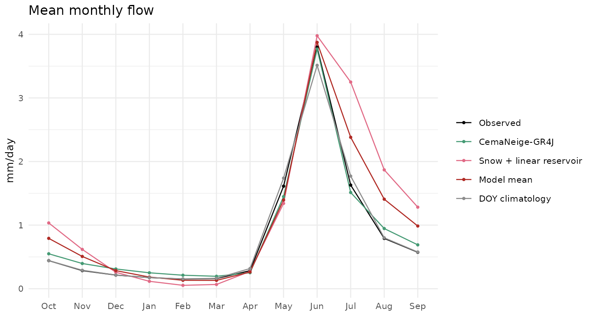

fit_models() treats every model the same way, so a new
model only needs a spec: its calibration bounds and a
build() function. Once registered, it gets the same
forcing, folds, calibration, climate-contrast test, summaries, plots and
predict() as the built-in models.
library(WSVAflowR)
options(wsva.data_dir = file.path(tempdir(), "wsva"))
wsva_models()[["CemaNeige-GR4J"]]
#> <wsva_model> CemaNeige-GR4J (gr4j): 6 parameters, needs airGR
#> Perrin et al. 2003, J. Hydrol. 279:275; CemaNeige: Valery et al. 2014The contract
build(x, n_layers) receives the basin’s model inputs and
returns a closure function(params) that gives daily flow in
mm/day, one value per row of x$daily:
-
x$daily: forcing (forcing_required_vars()), plustmean_c,eto_mm(Penman-Monteith reference ET) andpet_mm(ETo × land-cover crop coefficient), and observedq_mm -
x$static: one row of basin attributes (lat,elev_m,swc_max_mm,jtemp_c,kc_dormant, …) -
x$hypso: 101 elevation quantiles, for elevation-band snow models
Do the expensive set-up (anything that does not depend on the
parameters) in build(), outside the closure: the closure
runs once per calibration step.
A small example
A deliberately simple model: a degree-day snowpack feeding one linear reservoir, with runoff reduced by PET.
snow_bucket <- wsva_model(
id = "snowres", name = "Snow + linear reservoir",
bounds = param_bounds(ddf = c(0.5, 8), # melt factor (mm/C/day)
k = c(2, 200), # reservoir time constant (days)
et = c(0, 1)), # fraction of PET removed
build = function(x, n_layers) {
p_in <- x$daily$prcp_mm; t <- x$daily$tmean_c; pet <- x$daily$pet_mm
snow_frac <- t < x$static$jtemp_c
function(par) {
swe <- 0; water <- numeric(length(p_in))
for (i in seq_along(p_in)) {
if (snow_frac[i]) swe <- swe + p_in[i]
melt <- if (t[i] > 0) min(swe, par$ddf * t[i]) else 0
swe <- swe - melt
water[i] <- max((if (snow_frac[i]) 0 else p_in[i]) + melt - par$et * pet[i], 0)
}
route_ihacres(water, tau_q = par$k, tau_s = par$k, vs = 0)
}
},
reference = "Vignette example")
register_model(snow_bucket)Fit it next to a built-in model
b <- example_basin()
fits <- fit_models(b, models = c("gr4j", "snowres"), cv = "blocked", n_evals = 80)
#> CemaNeige-GR4J: blocked
#> CemaNeige-GR4J: full record
#> Snow + linear reservoir: blocked
#> Snow + linear reservoir: full record
summary(fits)
#> CCACCRCO CLEAR CREEK ABOVE CLEAR CREEK RESERVOIR, CO.
#>
#> Held-out water years (blocked CV, median over folds; pbias > 0 = under-prediction):
#> model kge nse log_nse pbias kge_worst
#> CemaNeige-GR4J 0.81 0.77 0.84 -4.04 0.68
#> Model mean 0.71 0.76 0.75 -16.58 0.57
#> DOY climatology 0.57 0.62 0.87 0.55 0.51
#> Snow + linear reservoir 0.52 0.39 0.19 -36.43 0.31
plot(fits, type = "seasonal")
The simple model can be compared with GR4J on exactly the same
held-out years, and predict(fits, forcing = ...) runs it
with new climate like any other model.